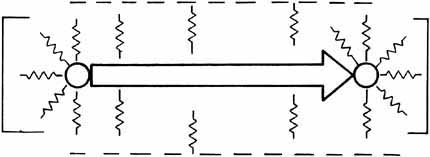
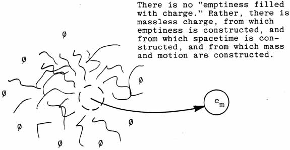
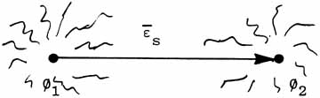

(ADVANCED ELECTRICIAN'S VECTOR)
Figure 9. Charged spatial (massless) vector.
|
-- CHARGED SPATIAL (MASSLESS) VECTOR -- We recognize now that
and that qc is simply the virtual-particle
flux that constitutes charge -- and indeed constitutes vacuum itself! |

Figure 10. Removing the bare particle (mass) from
a charged particle leaves the charge.
The vacuum is DEFINED AS the charge.
|
That is, vacuum may be defined as pure massless charge flux. This
flux IS identically "spacetime" as well. Vacuum is pure
Ø-field (electrostatic scalar potential). Here again, in present
theory it is assumed that
which, by our new definition of vacuum, is quite false.

Figure 11. Assigning a spatial vector to the |